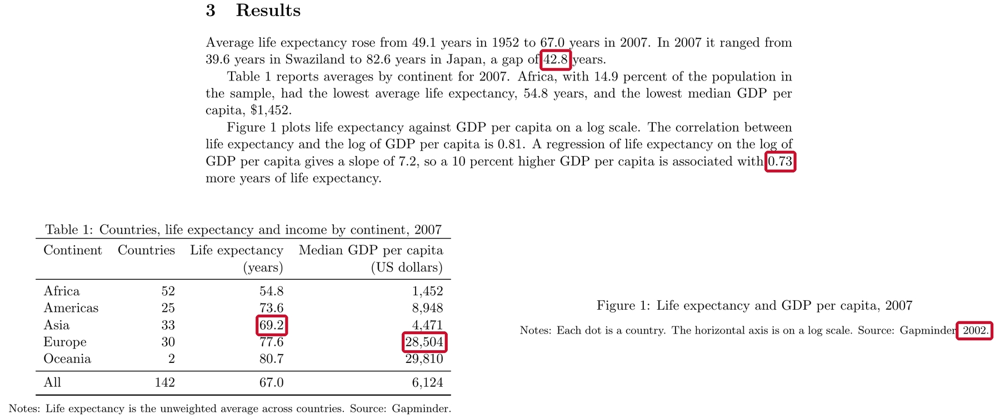

11 · Reproducible projects
Thursday, October 1, 2026
Four parts: why reproducibility matters and what economics journals require; what a replication package contains; sharing the package on GitHub with a DOI; and linking the numbers, tables and figures in a paper to the code. The examples use a two-page draft paper and its code: download the project (a zip file).
Ten minutes, once, on the laptop you bring. In RStudio’s Console:
install.packages(c("rmarkdown", "gapminder", "renv"))If R asks whether to use a personal library, answer Yes; if it asks about installing from sources, answer No.
Then File → New File → Quarto Document… and click Create. RStudio opens a document with some sample text. Save it anywhere as test.qmd and click Render above the editor. If RStudio offers to install or update packages first, accept. A page with the sample text opens in the Viewer pane or in your browser: Quarto works on your laptop, and the exercise in class will too.
Objectives
By the end of this session you can:
- Explain why reproducibility matters.
- Define reproducibility and replicability.
- Explain what economics journals require of data and code.
- Write a README from the data editors’ template.
- Record package versions with
renv. - Tag the code version you submit to a journal.
- Archive a release of the code with a DOI.
- Check every number in a draft against the code with Claude Code.
- Have R write the numbers and tables into a paper.
- Format tables and figures to the AER style guide.
Plan for today
- Why reproducibility matters and what journals require
Why it matters, with two examples · reproducibility versus replicability · journal policies · the AEA’s checks - The replication package
Contents and README · data availability · package versions with renv · a test on another computer · submitting homework - GitHub and DOIs for replication packages
Git tags for submitted versions · publishing only the tagged version · the AEA deposit · DOIs · licenses - Linking numbers, tables and figures to the paper
Numbers from many places · Claude Code traces them (live) · a better way: R writes them, and Claude Code converts the draft · formats for journals
1 · Why reproducibility matters and what journals require
Why reproducibility matters
- Errors in published work are common: “a commonplace rather than a rare occurrence”, in a 1986 attempt to rerun articles from one journal.
- Many results do not reproduce from the authors’ own files: 22 of 67 papers in 13 journals; 68 of 152 AEJ: Applied packages in full.
- Others can check and build on the work. Without the data and code, they take it on trust.
- You will rerun it yourself. Gentzkow and Shapiro reran an early draft of their own paper: the code no longer ran, and once fixed it gave different results.
- Journals require it. AEA journals rerun the code before acceptance.
Sources: Dewald, Thursby and Anderson (AER, 1986); Chang and Li (CFR, 2022); Herbert, Kingi, Stanchi and Vilhuber (CJE, 2024); Gentzkow and Shapiro (guide, 2014).
A result that only its authors can rerun cannot be checked by anyone else. The first systematic attempt in economics asked the authors of 154 papers published in, accepted by or submitted to the Journal of Money, Credit and Banking for their data and code; 90 sent something, only 8 of the 54 data sets examined were complete enough to attempt a replication, and the authors concluded that inadvertent errors in published empirical articles are “a commonplace rather than a rare occurrence” (Dewald, Thursby and Anderson, AER, 1986, p. 587). Two later studies measured how often published economics reproduces from the authors’ own files. Chang and Li (CFR, 2022) attempted 67 papers from 13 economics journals and reproduced the key qualitative result of 22 without contacting the authors. The AEA Data Editor’s team attempted 152 replication packages from AEJ: Applied Economics and reproduced 68 fully and 66 partly (Herbert, Kingi, Stanchi and Vilhuber, CJE, 2024). The first person who needs to rerun a project is usually its author: a referee report arrives months after submission and asks for a new sample, a new control or a new table, and every number in the paper has to be produced again. Gentzkow and Shapiro describe going back to reproduce an early draft of one of their own papers: the code no longer ran because files had moved, and once it ran it produced different results (Gentzkow and Shapiro, guide, 2014, p. 4).
An error in a paper on abortion and crime
- The claim. Donohue and Levitt (QJE, 2001): legalized abortion in the 1970s explains up to half of the fall in US crime in the 1990s.
- The check. Foote and Goetz (QJE, 2008) reran the authors’ posted data and code: the state-by-year controls the paper describes for its last table were not in the code.
- What changed. With the controls, the effects on arrests fell by more than half; with arrests per person, to about zero.
- The reply. Donohue and Levitt (QJE, 2008) accepted the error and argued that better abortion data restore the result.
Takeaway: the error was found because the authors had posted their data and code.
Sources: Donohue and Levitt (QJE, 2001); Foote and Goetz (QJE, 2008); Donohue and Levitt (QJE, 2008).
Donohue and Levitt (QJE, 2001) argued that the legalization of abortion in the 1970s accounts for as much as half of the fall in US crime in the 1990s. Their final table regressed arrests by state, year and single year of age on abortion rates, and the text says the regressions include state-by-year interactions, which restrict the comparison to people in the same state and year. Christopher Foote and Christopher Goetz of the Federal Reserve Bank of Boston reran the authors’ posted data and programs and found that those interactions were missing from the code (Foote and Goetz, QJE, 2008). Adding them cut the estimated effect on property-crime arrests from -0.025 to -0.010 and on violent-crime arrests from -0.028 to -0.013; measuring arrests per person brought both to about zero (-0.001 and -0.004, not significant). The comment first circulated as a Boston Fed working paper in November 2005, with its data and programs. In their reply, Donohue and Levitt (QJE, 2008) accepted the coding error and argued that a better measure of abortion exposure, which adjusts for mobility and the timing of births, gives evidence as strong as the original. The coding error itself is not in dispute, and Donohue and Levitt credit the posting of their data and programs with getting it caught.
An error in a paper on Social Security and saving
- The claim. Feldstein (JPE, 1974): in US data for 1929–71, Social Security wealth reduced personal saving (coefficient 0.021, standard error 0.006).
- The check. Leimer and Lesnoy (JPE, 1982) found a bug in the program that built the wealth series: a loop for survivors’ benefits did not reset each year, so the series grew too fast.
- What changed. On the same data, fixing the bug moved the estimate from 0.024 to 0.015 (0.010); with data to 1976, to 0.002 (0.011).
- The reply. Feldstein (JPE, 1982) accepted the bug and argued that adding the 1972 benefit increase restores about 0.017.
Takeaway: the bug sat in the program that built a variable, where only someone rebuilding that variable could find it.
Sources: Feldstein (JPE, 1974); Leimer and Lesnoy (JPE, 1982); Feldstein (JPE, 1982), with the numbers in its working paper, Table 1.
Feldstein (JPE, 1974) estimated from US time series for 1929–71 that Social Security wealth, the present value of expected benefits, reduced personal saving: a coefficient of 0.021 with a standard error of 0.006. Dean Leimer and Selig Lesnoy of the Social Security Administration found that the Fortran program that built the wealth series contained an error in its treatment of the 1957 change in survivors’ benefits: a loop did not reset its starting value each year, so the series grew faster than the specification implied (Leimer and Lesnoy, JPE, 1982). In his reply, Feldstein (JPE, 1982) accepted the error and re-estimated. On revised national accounts for 1929–71 the coefficient moved from 0.024 with the old series to 0.015 (0.010) with the corrected one, and extending the corrected series to 1976 gave 0.002 (0.011). Feldstein argued that the corrected series leaves out the 20 percent benefit increase of 1972 and that adding it restores an estimate of about 0.017 (Table 1 of the working paper).
Reproducibility versus replicability
- Reproducibility: “obtaining consistent results using the same input data; computational steps, methods, and code; and conditions of analysis.”
- Replicability: “obtaining consistent results across studies aimed at answering the same scientific question, each of which has obtained its own data.”
- Example: a paper’s code, run on its data, returns every number in the paper (reproducibility). A new study with other data finds the same relationship (replicability).
- Usage in economics varies. Journals call the files a replication package; what they check is reproducibility, the subject of this session.
Source of the definitions: National Academies (report, 2019), p. 6.
The definitions are from the National Academies of Sciences, Engineering, and Medicine’s report Reproducibility and Replicability in Science (National Academies, report, 2019, Summary, p. 6). An earlier pair, from a 2015 report to the US National Science Foundation and quoted in Vilhuber (HDSR, 2020), says the same with other words: reproducibility is “the ability […] to duplicate the results of a prior study using the same materials and procedures as were used by the original investigator”, and replicability is “the ability of a researcher to duplicate the results of a prior study if the same procedures are followed but new data are collected”. Vilhuber notes that “a variety of usages and gradations of the terms are in use” in economics, and that some authors define the two terms the opposite way. Journals call the deposit a replication package even though what they check is reproducibility.
A paper can be reproducible and still fail to replicate: the code runs and returns the published numbers, and a new sample gives a different answer. A paper that is not reproducible cannot be checked at all, which is why journals now ask for the data and code.
Journal policies on data and code

Sources: McCullough and Vinod (AER, 2003); Bernanke (AER, 2004); McCullough (EAP, 2009); AEA policy; datacodestandard.org.
The AER’s first policy was announced by its editor in the March 2004 issue (Bernanke, AER, 2004), after McCullough and Vinod (AER, 2003) tried to replicate the papers in the June 1999 issue and dropped the project because “only half of the authors would comply” with requests for data and code (as recorded in the AER editor’s report, AER P&P, 2011, p. 697). The count of journals with a mandatory archive is from Figure 1 of McCullough (EAP, 2009). The AEA appointed its first Data Editor, Lars Vilhuber, in January 2018, and on July 10, 2019 adopted the Data and Code Availability Policy, under which “replication archives will now be requested prior to acceptance”; the policy has been revised since, most recently in February 2026.
The Data and Code Availability Standard (version 1.0, December 2022) was written by the data editors of economics journals. Its 16 rules fall in four groups:
| Group | Rules |
|---|---|
| Data | A data availability statement; raw data public; analysis data in the package unless they can be rebuilt from accessible data; common formats; variable descriptions; a citation for every dataset |
| Code | Programs that build the analysis data from the raw data; programs that produce every result; code in source form |
| Supporting materials | Survey instruments or experiment instructions; ethics approval; pre-registration; a README with the data availability statement and every software and hardware dependency |
| Sharing | Archived in a repository the journal accepts; a license; the README states anything left out for legal reasons |
The list of journals that endorse it includes the AER, AER: Insights, the four AEJs, the Journal of Economic Literature, the Journal of Economic Perspectives, Econometrica, Quantitative Economics, Theoretical Economics, the Journal of Political Economy, the Review of Economic Studies, the Economic Journal, the Journal of the European Economic Association, the Canadian Journal of Economics, Economic Inquiry, the Econometrics Journal and the Review of Financial Studies.
Policies at AJAE, JAERE and JEEM
| Journal | Asks for | When | Checked before publication |
|---|---|---|---|
| AJAE | Data and a README; code where needed | At acceptance | No data editor; partial compliance accepted |
| JAERE | Data, code, output and a README, on its Dataverse | After conditional acceptance | An editor checks the package against a checklist |
| JEEM | Data and code in a repository, cited in the paper, or a statement of why not | Not stated | Not stated |
- None of the three policies says the code is rerun before publication.
- JAERE asks for output files named as in the paper:
Table1.tex,intextresults.log.
Sources: AJAE author guidelines; JAERE data availability policy; JEEM guide for authors, “Research data”.
Field journals set their own rules. The American Journal of Agricultural Economics has no data editor. Its author guidelines, in the section “Data and Documentation”, say that “Upon acceptance and in keeping with evolving policies at other top economics journals, authors are expected to submit their datasets and associated documentation (perhaps in a readme file), for readers to download from the AJAE website”, together with “whatever other material is needed to ensure that their results can be replicated (this might include code or pseudo-code used in estimation)”, and that “the editors would prefer partial compliance over non-compliance”. Its final checklist for accepted papers asks for “Data, code (or pseudo-code) and readme files” with the final submission.
The Journal of the Association of Environmental and Resource Economists has had its data availability policy since July 1, 2017. Accepted papers post data, code, output and a README on JAERE’s Dataverse, with output file names that “align with how results appear in the paper (e.g., Table1.tex, Figure C2.pdf, intextresults.log)”. After conditional acceptance, authors fill out a replication package checklist, and “The package will be reviewed by a JAERE editor to verify that it satisfies all requirements prior to publication.”
The Journal of Environmental Economics and Management follows Elsevier’s research data option C (guide for authors, “Research data”): authors “are required to: Deposit your research data in a relevant data repository. Cite and link to this dataset in your article. If this is not possible, make a statement explaining why research data cannot be shared.” Research data “may also include software, code, models, algorithms”. The guide names no data editor and no check of the code. Read the policy of the journal you submit to before you build the package.
The AEA Data Editor’s checks
- AEA journals require the replication package before final acceptance. The Data Editor’s team runs the code and compares its output with the tables, figures and numbers in the paper.
- December 2024 to November 2025, 382 papers at conditional acceptance: 20 accepted as submitted; 285 accepted with changes the authors had to make; 77 sent back for another round of revisions.
- A common problem, in the report for 2022–23: “many authors still manually save figures and copy tables”.
Sources: the AEA policy; Vilhuber (AER P&P, 2026), Table 2.
Takeaway: about 1 paper in 19 passes the Data Editor’s check with no changes.
The AEA Data and Code Availability Policy requires that, before acceptance, authors provide “the data, code, and other details of the computations sufficient to permit replication”, and it states that the AEA Data Editor “will assess compliance with this policy, including by conducting reproducibility checks”. The counts in the second bullet are the last recommendation on record for each manuscript at the conditional-acceptance stage, December 2024 to November 2025 (Vilhuber, AER P&P, 2026, Table 2): “Accept” 20, “Accept—with changes” 285, “Conditional accept” 77. A conditional accept means the manuscript goes through another round of author revisions. Manual steps are a common reason: the report for December 2022 to November 2023 (Vilhuber, AER P&P, 2024) notes that “many authors still manually save figures and copy tables”.
Studies that go back to already published papers report lower rates. When the Data Editor’s team tried to reproduce 152 packages from AEJ: Applied Economics, 68 reproduced fully and 66 partly (Herbert, Kingi, Stanchi and Vilhuber, CJE, 2024). An earlier study of 67 papers in 13 economics journals reproduced the key result of 22 of them without help from the authors (Chang and Li, CFR, 2022).
2 · The replication package
What a replication package contains
A replication package is the data, code and README published with a paper so that others can reproduce its results. Below, a package for a two-page paper on income and life expectancy.
income-life/
├── README.pdf
├── income-life.Rproj
├── renv.lock
├── data/
│ └── gapminder.csv
├── code/
│ ├── run_everything.R
│ ├── 01_table1.R
│ ├── 02_figure1.R
│ └── 03_numbers.R
├── output/
│ ├── table1.tex
│ ├── figure1.pdf
│ └── numbers.tex
└── paper/
└── paper.texREADME.pdf: AEA journals ask for a PDF.data/: the data, or how to get them.run_everything.R: every script, in order.output/: every table, figure and number in the paper.renv.lock: R and package versions.
This is the draft project after the fixes: a script that writes the numbers file, a table written as .tex, a paper that reads both, a lockfile, and a README. The AEA policy asks for “a README document in PDF format in the uppermost directory of the replication package”; the Data Editor’s guidance also accepts a text file. Write it in Markdown and render it to PDF when you deposit. The policy strongly encourages a main script, and the reports keep finding packages without one: a scan of 8,280 replication packages in about twenty economics journals found a main script in 2,594 of them (self-checking guide).
The sections of a README
| Section | What it says |
|---|---|
| Data availability and provenance | Where each dataset comes from, whether you may share it, how to get it |
| Dataset list | Each data file, its source, and whether it is in the package |
| Computational requirements | Software and versions, random seeds, memory, running time |
| Description of programs | What each script does; the license for the code |
| Instructions to replicators | The steps, in order |
| List of tables and programs | Which script makes each table and figure, and the file it writes |
| References | A citation for every dataset |
Start from the template README written by the data editors of economics journals; the AEA policy says its use “is strongly encouraged”.
The template is endorsed by the data editors of the AEA journals, the Review of Economic Studies, the Economic Journal and the Canadian Journal of Economics, and it opens with a short Overview of what the package does and how long it runs. Every section has worked examples. The README is the part of the package a replicator reads first. The Data Editor’s team runs the package on its own (“This happens without interaction with the authors”, in the Data Editor’s guidance), so whatever the README leaves out, they have to guess.
The data availability statement
The README section that says who made each dataset, under which license, where your file came from and what you did to it, and whether it is in the package. For the draft project:
The data are the Gapminder excerpt distributed in the R package
gapminder(Bryan 2025, doi:10.32614/CRAN.package.gapminder), released under CC0. The underlying data come from the Gapminder Foundation (gapminder.org/data) under a CC BY 4.0 license. The filedata/gapminder.csvis the package’sgapminderdata frame written withwrite.csv(); it is included in this package.
The AEA asks for this statement even when every dataset is in the package: “This information must be provided even when all data are included as part of the deposit.” It also asks for a citation of every dataset in the paper’s references, in the same form as a citation of a paper.
Replication packages with restricted data
- Restricted data: data you may not redistribute, such as administrative records, licensed firm data, surveys with personal information.
- The package still includes the code, the README and a citation for the data.
- The README says who holds the data, how a researcher applies for access, how long it takes and what it costs.
- It lists the files and variables the code expects, with their exact names, so someone with access can run it.
In the AEA Data Editor’s report for 2025, “about 60 percent of manuscripts used some data that could not be shared publicly” across all AEA journals (Vilhuber, AER P&P, 2026, pp. 894–895). Restricted data change what goes in the deposit. The code, the README and the data citation go in as usual, and the Data Availability and Provenance section explains access in enough detail that a researcher could apply for the same data and run the code on it.
Recording package versions with renv
- renv is an R package. It gives a project its own package library and a lockfile,
renv.lock, that lists the R version and each package’s version. renv::init(): creates the project library and writesrenv.lock.renv::snapshot(): after you install or update a package, records the change in the lockfile.renv::restore(): on another computer, installs the versions the lockfile names.renv::status(): says whether the lockfile and the library agree.- Commit
renv.lock,.Rprofile,renv/activate.Randrenv/settings.json. renv writes its own.gitignore, which keeps the library folder out.
The Data Editor’s guidance for R says it directly: “For R packages, we suggest that users use renv”. renv::init() scans the project’s scripts and .qmd files for the packages they load, installs them into a library that belongs to the project, and writes the lockfile. It records only what the code loads: a project whose scripts use base R alone gets a lockfile that lists renv and nothing else. When someone else opens the project, the .Rprofile file starts renv, which installs itself if needed and offers to run renv::restore(). On a fresh copy of a small project with a Quarto report (47 packages), renv::restore() took about 12 seconds on the computer that made this page.
The contents of renv.lock
{
"R": {
"Version": "4.6.1",
"Repositories": [
{
"Name": "CRAN",
"URL": "https://packagemanager.posit.co/cran/latest"
}
]
},
"Packages": {
...
"gapminder": {
"Package": "gapminder",
"Version": "1.0.1",- From a project whose script loads gapminder: the R version, the repository the packages came from, and each package’s version.
- renv records the R version but does not install it.
The versions shown are the ones on the computer that wrote this file; yours will differ. The file lists twelve packages in alphabetical order: gapminder, renv itself, and ten that gapminder needs (tibble and the packages tibble uses); each entry also repeats the package’s description, which makes the file long. The lines above are the ones that matter. renv does not capture the operating system or system libraries either, and restoring an old lockfile can mean installing old package versions from source, which needs compilers on a Mac or Windows laptop.
Other ways to control package versions
| Approach | What it fixes | What it leaves open |
|---|---|---|
library() calls at the top of the script |
Nothing: the script stops if a package is missing | Which version is installed |
| Install the missing packages, then load them | Every package is installed | The version: it installs the newest |
remotes::install_version("gapminder", "1.0.1") |
One package’s version | The versions of the packages it needs |
| renv | Every package’s version, listed in renv.lock |
The R version, the operating system |
| A dated copy of CRAN, from Posit Package Manager | Every package as CRAN had it on that day | The R version, the operating system |
| A Docker image | The operating system, R and every package | Needs Docker on the computer that runs it |
- The
checkpointpackage used dated copies of CRAN kept by Microsoft. Microsoft closed that service on July 1, 2023, andcheckpointno longer works.
Load packages with library(), which stops the script with an error when a package is missing; require() only warns and returns FALSE, so the script runs on and fails later with a less useful message. A loop that installs whatever is missing (want[!want %in% rownames(installed.packages())]) makes the script run on a new computer, but it installs today’s version of each package, not the one you used.
remotes::install_version() installs one package at a stated version, building it from source by default, which needs compilers. A dated copy of CRAN fixes every package at once: Posit takes “a snapshot of CRAN every business day”, and pointing R at one of them installs the versions of that day (Posit’s announcement):
options(repos = c(CRAN = "https://packagemanager.posit.co/cran/2024-01-02"))Microsoft announced that its snapshot service, MRAN, “will be retired on July 1, 2023” and that checkpoint would stop working (Microsoft’s notice); CRAN archived checkpoint in November 2025. A Docker image is a file that holds an operating system, a version of R and the packages; any computer with Docker installed runs the code inside the same environment. The Rocker project publishes images with a fixed version of R.
Running the package on another computer
- Copy the project to a place where the code never ran: a new clone in a new folder, a lab computer, a classmate’s laptop.
- Follow only the README. Add to the README anything you needed that it does not say.
- Run
code/run_everything.Rfrom start to end with no manual steps. Compare every table, figure and number with the paper.
The AEA Data Editor’s guidance asks authors to “re-run the code again, in a clean environment, possibly a fresh computer”, and the Data Editor’s self-checking guide suggests having someone else run the package “based entirely on the documentation you provide, without interacting with you in any other way.” A fresh clone in a new folder on your own laptop catches missing files and paths that exist only on your disk; with renv, it also starts from an empty package library. Someone else’s laptop catches the rest.
Submitting homework as a small replication package
- The grader opens your homework repository in a fresh R session and sources
code/run_everything.R. Nothing else. run_everything.Rruns the numbered scripts incode/in order.- The scripts read or download the data and write every figure, table and number to a file.
- Paths start at the project folder:
"data/...", never"/Users/you/...". - A short README says what each script does and what it writes.
- Before you submit, clone your repository into a new folder, restart R, and source
run_everything.Rthere. - Do not commit
data/ordata_clean/: the code rebuilds them. The last commit onmainat the deadline is the one graded.
Each homework repository works like the packages in this part, on a small scale. The grader does what a journal’s data editor does: it starts from your repository, not your laptop, opens it in a fresh R session, sources code/run_everything.R, and compares what the code writes with what the assignment asks for. A script that depends on an object left in your environment, a file on your desktop, or a step you did by hand fails there even when it works for you.
The most direct test is the one on the previous slide: clone your repository into a new folder (git clone and the repository’s address), open its .Rproj, restart R, and source run_everything.R. If it stops, the message names what the clean copy is missing. Raw data stay out of the repository when the code downloads them, and anything computed goes in data_clean/, which the code rebuilds; the assignment says which files to commit. The collection script takes the last commit on the main branch at or before the deadline, so push before the deadline and check on GitHub that the commit is there.
3 · GitHub and DOIs for replication packages
Why tag the version you submit
- After you submit, the code keeps changing. Referees’ questions, and the journal’s check at acceptance, concern the version you sent.

- A commit is known by its hash,
3159ecc. A tag gives it a name that stays put,v1-submitted; the branchmainmoves on. - A tag changes no file. It shows in
git log --decorateand in GitHub’s list of tags.
A commit already identifies one version of every file, and its hash never changes, so a hash in the README would do the job in principle. A tag adds three things. It is a name people can read and remember; every git command accepts it wherever it accepts a hash, as in git diff v1-submitted v2-revised. It stays on its commit: a branch name such as main moves forward with every new commit, so “the version on main” means something different each week, while v1-submitted always means the commit you sent. And GitHub builds on it: the repository’s list of tags offers a zip file of the code at each tag, a release is made from a tag, and Zenodo archives releases and gives each one a DOI.
A tag changes no file. It shows up as a label: git log --oneline --decorate prints (tag: v1-submitted) beside the commit, and on GitHub tags appear under the Tags tab of the branch menu and on the repository’s tags page; a release made from a tag appears in the Releases box on the repository’s front page.
Tagging the version you submit
git tag -a v1-submitted -m "Version submitted to the journal"
git push origin v1-submitted-amakes an annotated tag: it records who made it, when, and the message.git pushalone does not send tags to GitHub; push each tag by name.- Referees rarely run the code. The tag lets you rerun the submitted version when a referee asks about one of its results.
- At acceptance, tag the version you deposit and name the tag in its README.
Without a tag, the version you submitted is one commit among many, known only by its date and its hash. A tag gives that commit a name that every git command accepts in place of the hash: git switch, git diff and git log all take v1-submitted. Name tags so they say what happened: v1-submitted, v2-revised, v3-accepted. Tag the commit that produced the PDF you sent, after the last change to the code and the paper, and push the tag right away.
Referees in economics rarely run the authors’ code; where a journal checks the code, it does so at acceptance, as the AEA Data Editor does at conditional acceptance. During review, the tag is for you and your co-authors: when a referee asks about Table 3 of the submitted version, you can rerun exactly the code that produced it, even after months of changes. At acceptance, tag the version you deposit, such as v3-accepted, and give the tag’s name in the package’s README, so that anyone can match the archived copy to the commit in the repository.
On GitHub, a release turns a tag into a page with a zip file of the code at that commit: Releases → Draft a new release → Choose a tag → Publish release. Zenodo archives releases (see Archiving a release with a DOI).
Working on the project during revisions
git log --oneline --decorate
#> 83b87f6 (HEAD -> main) README: add the list of tables and programs
#> 042175d (tag: v2-revised) Referee 2: describe the fitted line in the figure note
#> 9ae9460 Write the numbers in the text from code/03_numbers.R
#> 3159ecc (tag: v1-submitted) Correct five numbers in the text and Table 1
#> a228ee2 Draft: data, Table 1 and Figure 1 scripts, paper- A project’s history after one submission and one revision, made for this session. Each version sent has a tag; work goes on in
main. git diff --stat v1-submitted v2-revised: the files that changed between the two versions, for the response to the referees.git switch --detach v1-submitted: the folder as it was when you submitted, to rerun it.git switch mainreturns to the newest commit.
--decorate prints the tags and branches next to the commits they point to. The history above was made for this session from the draft project; the hashes in your own repository will differ. git diff --stat between the two tags lists the files that changed and how many lines:
git diff --stat v1-submitted v2-revised
#> code/03_numbers.R | 10 ++++++++++
#> code/run_everything.R | 1 +
#> paper/draft.tex | 4 ++--
#> 3 files changed, 13 insertions(+), 2 deletions(-)Drop --stat to see every changed line. When a referee asks about a result in the submitted version, switch to its tag, run the code, read the output, and switch back:
git switch --detach v1-submitted
#> HEAD is now at 3159ecc Correct five numbers in the text and Table 1
git switch main
#> Switched to branch 'main'While switched to a tag, the folder holds the files of that commit: code/03_numbers.R does not exist there, because it was written after the submission. Do not edit or commit while switched to a tag; commits made there belong to no branch. Switch back to main first.
When to make a GitHub repository public
- While you work: a private GitHub repository, shared with your co-authors.
- AEA journals require the replication package at conditional acceptance, deposited in an open archive. The archive publishes it before the article.
- The code must be public even when the data cannot be.
- You may make the GitHub repository public earlier, for example when the working paper goes online.
- Never commit to any repository, private or public: confidential data, data you have no right to publish, personal information, passwords, API keys.
The AEA policy requires the package prior to acceptance, in “an openly accessible trusted data repository”. When the data cannot be published, the authors must still make the code publicly available, document the source of the data, and keep the data and code for no less than five years after publication; data provided “upon request” are generally not acceptable when the authors themselves approve the requests. The Data Editor’s guidance notes that the package is published as soon as it is complete, ahead of the article. None of this stops you from preparing the package from the first day: the fixes in this session are cheap while you work and expensive at acceptance.
Making only the tagged version public
- GitHub sets visibility for a whole repository; a tag cannot be public on its own.
- A public repository shows every past commit, including files you deleted later.
git archivewrites the files at a tag to a zip, with no history:
git archive --format=zip --output=../income-life-v3.zip v3-accepted- The zip holds only files git tracks; add data kept out of git by hand.
- Upload the zip to Zenodo or the journal’s archive, or commit it to a new public repository. The working repository stays private.
GitHub’s documentation is plain about both halves. “A repository contains all of your code, your files, and each file’s revision history” (About repositories), and removing sensitive data means rewriting the history with a special tool, after which copies can still survive in other people’s clones and forks (Removing sensitive data). A password or key that ever reached a commit should be treated as exposed: change it first.
git archive avoids the problem by publishing files, not history. The command above writes every file git tracks at the tag v3-accepted to a zip, without the .git folder and without anything committed later; git also writes the commit’s hash into the zip’s comment, which unzip -l prints on its first line. Add --prefix=income-life/ to put the files inside a folder in the zip. Files git does not track, such as data listed in .gitignore, are not in the zip, so a package whose data stay out of git needs them added by hand, or instructions in the README for getting them. Upload the zip to Zenodo with New upload, or to the journal’s archive; or start a new repository from its contents and make that one public. This course’s own site is published from a fresh public repository built from a clean copy of the files; the private repository where the work happens, and its history, stay private.
Submitting the package to an AEA journal
- The package does not go through GitHub. At conditional acceptance you deposit it in the AEA Data and Code Repository at openICPSR.
- Import the zip from
git archiveinto the deposit, so the deposit lists every file. - The GitHub repository can be linked from the deposit as related material.
- The Data Editor’s team runs the package from the deposit.
- The deposit’s DOI,
10.3886/E…V…, works once the deposit is published, at the end of review.
Source: the AEA Data Editor’s guidance on the deposit.
The AEA Data Editor’s guidance on the deposit walks through the steps: create a project in the AEA Data and Code Repository on openICPSR, add the files, fill in the metadata, and submit the deposit to the AEA from openICPSR. On files it says “Do not upload a ZIP file - IMPORT IT!”: the import unpacks the zip, so the deposit shows each file rather than one archive. A GitHub repository can be named in the deposit’s related publications, “If code is derived from or continues to be updated on a Git repository”; the deposit itself is the copy the Data Editor’s team runs and the copy readers download. Its DOI has the form 10.3886/E followed by the project number, V and the version, and “the DOI will not work until (at the very end of the review process) the deposit is published.”
Archiving a release with a DOI
- The owner of a GitHub repository can rename, change or delete it at any time. Journals do not accept a GitHub link as the archive.
- A DOI (digital object identifier) is a permanent link,
https://doi.org/..., to one archived copy of the files. - AEA journals: the AEA Data and Code Repository at openICPSR, or another trusted archive such as Zenodo.
- Zenodo archives each release of a public GitHub repository and gives it its own DOI, plus one DOI that always resolves to the newest release.
- Cite the DOI of the release the paper used. Example, the
gapminderpackage’s releases: doi.org/10.5281/zenodo.594018.
The Social Science Data Editors list GitHub among the places that are not acceptable as an archive, because “a project’s owner can delete a git repository at any time” (guidance on hosting), and the AEA’s FAQ says the same of git platforms and cloud folders. The AEA repository is strongly encouraged but not required; the Data Editor accepts other trusted repositories, with Zenodo, Dataverse and Code Ocean among the examples.
To archive a GitHub repository on Zenodo, log in to Zenodo with your GitHub account, switch the repository on in Zenodo’s GitHub settings, and publish a release on GitHub (GitHub’s guide). Zenodo keeps a copy of that release and registers a DOI for it, plus a second DOI for all versions, which always resolves to the newest one (Zenodo on versioning). Cite the version DOI for the version your paper used. Zenodo’s link to GitHub works only with public repositories; to keep the repository private, upload the zip from git archive with New upload instead, and Zenodo gives it a DOI the same way. The Zenodo sandbox is a separate copy of the site for practice; its DOIs use a test prefix and do not lead to the record.
A license and a citation file
- A license says what others may do with your files. The AEA suggests the modified BSD license for code and CC BY 4.0 for data and documents.
- Data you got from someone else keep their own license; the README says which.
- A
CITATION.cfffile at the top of the repository adds a “Cite this repository” link on GitHub, and Zenodo reads it when it archives a release.
The license advice is in the AEA’s FAQ and the Data Editor’s licensing guidance, which provides a template with both licenses in one LICENSE.txt. The policy itself asks only that the license permit replication. A CITATION.cff file is a short plain-text file with the title, the authors and the DOI (GitHub on citation files).
4 · Linking numbers, tables and figures to the paper
The numbers in a paper come from many places
![Three sources on the left: R's Console, with nothing saved; output/table1.csv; and output/figure1.pdf. On the right, the paper draft.tex with five parts: Abstract (49.1, 67.0, 0.73), Results (39.6, 82.6, 42.8, 14.9 and more), Table 1 (rows such as 52, 54.8, 1,452), Figure 1, and the Note under it (Gapminder, 2002). Dashed red arrows marked typed by hand run from the Console to the Abstract, the Results and Table 1, and from table1.csv to Table 1. A solid arrow marked read from the file runs from figure1.pdf to Figure 1.](figures/11-reproducible-project/D7-number-sources.svg)
- The draft has 35 numbers typed by hand. When the code changes, each one has to be found, traced to its source and retyped, which is slow and error prone.
A draft written for this session: the paper (PDF) · the project (zip).
A paper quotes numbers that code computed: counts, means, slopes, shares. When you type them by hand, the link between each number and the line that made it exists only in your memory. Then the data change, a sample restriction moves, or a co-author fixes a bug. The code prints new numbers; the paper keeps the old ones. The diagram is the draft paper used in this part: its text and Table 1 were typed from R’s Console and from output/table1.csv, and only Figure 1 is read from its file by \includegraphics. The code changed after the numbers were typed; some were updated by hand and some were not. Here is its Results section:

The files of the draft project
income-life-draft/
├── README.md
├── income-life-draft.Rproj
├── data/
│ └── gapminder.csv
├── code/
│ ├── run_everything.R
│ ├── 01_table1.R
│ └── 02_figure1.R
├── output/
│ ├── table1.csv
│ └── figure1.pdf
└── paper/
├── draft.tex
└── draft.pdf- A folder made for this session, shared as a zip file on the session page.
paper/draft.pdfis the paper;paper/draft.texis its LaTeX source.run_everything.Rruns01_table1.R, which writestable1.csv, and02_figure1.R, which writesfigure1.pdf.- The paper reads none of these files: every number is typed in
draft.tex.
Download the project and unzip it into the folder where you keep your projects. The code is organized the way a project should be: a main script, one script per output, relative paths. The paper is the weak part: draft.tex types every number, and the code changed after the typing. The data are the Gapminder excerpt from the gapminder package: 142 countries, every fifth year from 1952 to 2007.
Running Claude Code on the draft project
- Download the project, a zip file, and unzip it into the folder where you keep projects, such as
~/github/ - Open a terminal in the project folder: in RStudio, open
income-life-draft.Rproj, then Tools → Terminal → New Terminal; or in Terminal,cd ~/github/income-life-draft - Type
claude. The first time, choose Yes, I trust this folder. If it says the login expired, type/login - Paste a prompt: the number check on the next slide, or the conversion to Quarto a few slides later
- Read each command it proposes before you approve it (option 2 approves that command for the rest of the session)
- When it finishes, open the files it names
Needs: R; Quarto, with LaTeX for PDF output (quarto install tinytex in a terminal, once); Claude Code, installed and logged in.
Every live run in this part starts the same way. The project has everything the prompts need: the data in data/, the scripts in code/, their output in output/, and the paper in paper/. Work in a fresh copy for each prompt if you want to compare runs: unzip the project again into a new folder. Claude Code asks before it runs a command or changes a file; read what it proposes, and decline anything that would change a file the prompt told it to leave alone.
Claude Code can find every number and trace it
Prompt to paste into Claude Code
Read paper/draft.pdf. Check every number in it that reports a result:
in the text, in Table 1, and in the notes under the table and the
figure. For each number, find the script in code/ that computes it. If
no script computes it, compute it from data/gapminder.csv with R. Then
list only the numbers that disagree with the code or the data: the
number as printed, where it appears, and the value you get. End with how
many numbers you checked. Do not change any file.- Live: it reads the PDF, the scripts and the data, recomputes each number, and lists the ones that disagree.
The prompt has the four parts of any task you hand an agent: where to look and what counts, where the right answer lives, what to report, and what not to do. “Only the disagreements, and a count” keeps the report short enough to read while still proving the agent looked at everything. “Do not change any file” keeps the fixes with you: an agent that edits the paper to match its own numbers has removed the evidence you need to check it.
Open a Terminal in the project folder (in RStudio: open income-life-draft.Rproj, then Tools → Terminal → New Terminal), type claude, and paste the prompt. The agent asks before it runs a command; read each command, then choose 1. Yes.
What Claude Code did in a test run before class
- Listed the project’s files and extracted the PDF’s text with
pdftotext. - Read the three scripts,
output/table1.csvandpaper/draft.tex. - Ran one
Rscriptcommand that recomputed every number in the paper fromdata/gapminder.csv. - Wrote the report. The test run took 37 seconds (Claude Code, the prompt above, the draft project, September 2026).
- Claude Code asked for approval before each of its two shell commands, as it does in its default permission mode.
⏺ Bash(find . -type f | grep -v '/\.' | head -50 && pdftotext -layout paper/draft.pdf -)
⏺ Glob(**/*)
⏺ Read(paper/draft.pdf)
⏺ Read(code/01_table1.R)
⏺ Read(code/02_figure1.R)
⏺ Read(code/run_everything.R)
⏺ Read(output/table1.csv)
⏺ Read(paper/draft.tex)
⏺ Now I'll compute everything from the data in R, without writing any files.
⏺ Bash(Rscript -e '
d0 <- read.csv("data/gapminder.csv"); str(d0)
cat("countries", length(unique(d0$country)), " years", sort(unique(d0$year)), "\n")
m <- tapply(d0$lifeExp, d0$year, mean); print(round(m,2))
d <- d0[d0$year==2007,]; cat("n2007", nrow(d), "\n")
print(d[which.min(d$lifeExp),c("country","lifeExp")]); print(d[which.max(d$lifeExp),c("country","lifeExp")])
cat("gap", max(d$lifeExp)-min(d$lifeExp), "\n")
print(round(tapply(d$lifeExp,d$continent,mean),2)); print(round(tapply(d$gdpPercap,d$continent,median),1))
cat("all mean", mean(d$lifeExp), " median gdp", median(d$gdpPercap), "\n")
p <- tapply(as.numeric(d$pop), d$continent, sum); print(round(100*p/sum(p),2))
cat("cor", cor(d$lifeExp, log(d$gdpPercap)), "\n")
f <- lm(lifeExp ~ log(gdpPercap), d); b <- coef(f)[2]; cat("slope", b, " x log(1.1)", b*log(1.1), " x0.1", b*0.1, "\n")
')
⎿ ...
gap 42.99
Africa Americas Asia Europe Oceania
54.81 73.61 70.73 77.65 80.72
Africa Americas Asia Europe Oceania
1452.3 8948.1 4471.1 28054.1 29810.2
all mean 67.00742 median gdp 6124.371
Africa Americas Asia Europe Oceania
14.87 14.38 60.98 9.38 0.39
cor 0.8089803
slope 7.202802 x log(1.1) 0.6865003 x0.1 0.7202802
⏺ Reply: the report on the next slide.The R command is shortened here to the lines that produced the report; the full run also printed the number of rows per country and a regression on base-10 logs.
Claude Code’s report: six numbers that disagree
Claude Code’s reply in a test run before class, rearranged into a table:
| As printed | Where | What the code or data give |
|---|---|---|
| 0.73 more years per 10% | Abstract | 0.69 (7.203 × log 1.1); 0.72 if taken as 7.203 × 0.1 |
| 42.8 years | Results, first paragraph | 43.0 (82.603 − 39.613) |
| 69.2 (Asia) | Table 1 | 70.7, from 01_table1.R and table1.csv |
| 28,504 (Europe) | Table 1 | 28,054: two digits swapped |
| 0.73 | Results, third paragraph | the same as the abstract |
| Gapminder, 2002 | Note under Figure 1 | 2007: the figure plots 2007 |
- 35 numbers checked; 6 disagree: five errors, since 0.73 appears twice. Recompute each before you edit the paper.
- A better way: have the code write every number into the paper, so none is typed by hand.
The report is the agent’s, reworded into three columns; its full text said “I found 6 numbers that disagree with the code or the data. There are 5 distinct errors, and one of them is printed twice,” and ended with the list of the 35 numbers it checked, section by section.
How the errors got there: the first version of the draft used the 2002 data. The code then moved to 2007, and the numbers were updated by hand. The range’s endpoints were updated and the gap between them was not; the slope was updated and the 10 percent effect was not; one table row was missed; one number was typed with two digits swapped; and the figure note kept the old year.
The five errors, marked on the draft

The draft’s Results section, Table 1 and the note under Figure 1. The five numbers in Claude Code’s report are boxed in red.
Checking the report before you edit the paper
- Recompute each reported number with one line of R before you change the paper.
- 0.73 has two possible replacements. The slope on log GDP per capita is 7.2: 7.2 × log(1.1) = 0.69 is exact; 7.2 × 0.1 = 0.72 is the usual approximation. Choose one and say which in the paper.
- Claude Code checks only numbers it can recompute from the project’s code and data, only those the prompt asks about, and its own computations can be wrong.
- To prevent these errors, have the code write every number into the paper. The next slides show how.
The AEA’s replicators do this same check by hand. Their report template asks them to map every table, figure and number in the text to the program and line that produce it, and to flag numbers in the text that the code does not identify (the replication report template). The template README has a box for it too: the author ticks it to state that the code reproduces all numbers given in the text. Running the number-check prompt before you submit does the replicator’s check first.
Two ways to have R write the numbers into a paper
- Quarto (installed with RStudio). The text and the R code sit in one
.qmdfile. Rendering runs the code, puts each computed value into the text, and writes an HTML, PDF or Word file. - LaTeX with generated files. The paper stays a
.texfile. R scripts write each table to a.texfile and each number in the text to a file of LaTeX macros. The paper reads those files with\input. - In both, each number is computed in one place, the code. Run the code again, render or compile, and the paper shows the new values.
Pick one route per paper. Quarto fits reports, online appendices, project pages, and co-authors who work in Word, because the same document renders to a web page, a PDF or a .docx file. LaTeX with generated files fits a paper you already write in LaTeX: nothing about the paper changes except that its numbers and tables arrive as files. If you write in Overleaf, copy the regenerated files into the Overleaf project after each run.
Gentzkow and Shapiro’s guide to code and data puts the principle as two rules: automate everything that can be automated, and write a single script that runs all the code from beginning to end (Gentzkow and Shapiro, guide, 2014, chapter 2). A number typed into the paper is a step nobody automated.
Asking Claude Code to convert the draft to Quarto
Prompt to paste into Claude Code
Convert paper/draft.tex into a Quarto document, paper/paper.qmd, that
renders to PDF. Every number in the text, the table and the notes must
come from R code that reads data/gapminder.csv or the files in output/;
type none by hand. Build Table 1 from output/table1.csv with
knitr::kable, and include output/figure1.pdf as Figure 1. Keep the
wording; do not try to match the layout. Render it. Then list every
number that differs from paper/draft.pdf. Do not change any other file.- In a test run before class (about two minutes), it wrote
paper/paper.qmd, renderedpaper/paper.pdf, and listed the five stale numbers with their new values. - The one number the data cannot give, the 10 in “10 percent”, it set once in the code:
pct <- 10.
The test run (Claude Code, the prompt above, a fresh copy of the draft project, October 2026) took 137 seconds. It read the paper, the scripts and the data, wrote paper/paper.qmd, rendered it, read the rendered pages to check the layout, and compared the numbers in the two PDFs. Its list of differences was the five errors the number check found: 0.73 became 0.69 (in the abstract and the Results), 42.8 became 43.0, Asia’s 69.2 became 70.7, Europe’s 28,504 became 28,054, and the year in the figure note became 2007. Table 1’s “All” row is not in output/table1.csv, so it computed that row from the data with the definitions in code/01_table1.R. The years and pages in the references stay as typed: they are citations, not results.
Two details in the prompt matter. “Do not try to match the layout” keeps the run short: an earlier run without it spent most of its ten minutes moving the table and the figure around the page. And the new file needs its own name: Quarto names its temporary files after the input, so rendering a paper/draft.qmd would write over draft.tex and draft.pdf and then delete them.
paper/paper.qmd from the test run
---
title: "Income and Life Expectancy across Countries"
author: "A. Researcher"
thanks: "Draft for discussion. Please do not cite."
header-includes: |
\AtBeginDocument{\date{Draft}}
format:
pdf:
geometry: margin=1in
fontsize: 11pt
number-sections: true
colorlinks: false
execute:
echo: false
warning: false
message: false
---
```{r setup}
# Every number in the text, table and notes is computed here from
# data/gapminder.csv or output/. Paths are relative to paper/.
d <- read.csv("../data/gapminder.csv")
t1 <- read.csv("../output/table1.csv")
f1 <- function(x) sprintf("%.1f", x)
f2 <- function(x) sprintf("%.2f", x)
f0 <- function(x) format(round(x), big.mark = ",", trim = TRUE)
n_countries <- length(unique(d$country))
years <- sort(unique(d$year))
first_year <- min(years)
last_year <- max(years) # the year used by code/01_table1.R and 02_figure1.R
step <- unique(diff(years))
stopifnot(length(step) == 1)
num_word <- function(n) c("one", "two", "three", "four", "five", "six",
"seven", "eight", "nine", "ten")[n]
le_by_year <- tapply(d$lifeExp, d$year, mean)
le_first <- le_by_year[[as.character(first_year)]]
le_last <- le_by_year[[as.character(last_year)]]
d_last <- d[d$year == last_year, ]
lo <- d_last[which.min(d_last$lifeExp), ]
hi <- d_last[which.max(d_last$lifeExp), ]
gap <- hi$lifeExp - lo$lifeExp
pop_share <- 100 * tapply(d_last$pop, d_last$continent, sum) / sum(d_last$pop)
africa <- t1[t1$continent == "Africa", ]
pct <- 10 # size of the income change discussed
r <- cor(d_last$lifeExp, log(d_last$gdpPercap))
slope <- coef(lm(lifeExp ~ log(gdpPercap), data = d_last))[["log(gdpPercap)"]]
effect <- slope * log(1 + pct / 100)
```
\begin{abstract}
\noindent People in richer countries live longer. Using data on `r n_countries`
countries observed every `r num_word(step)` years from `r first_year` to
`r last_year`, we show that average life expectancy rose from
`r f1(le_first)` to `r f1(le_last)` years. In `r last_year`, a `r pct`
percent higher GDP per capita is associated with `r f2(effect)` more years
of life expectancy.
\end{abstract}
# Introduction
Preston (1975) showed that life expectancy rises with income across
countries, steeply among poor countries and slowly among rich ones. We
revisit this relationship with more recent data.
# Data
We use the Gapminder data distributed by Bryan (2025). They cover
`r n_countries` countries every `r num_word(step)` years from `r first_year` to
`r last_year`. Life expectancy is measured in years at birth. GDP per capita
is measured in inflation-adjusted US dollars.
# Results
Average life expectancy rose from `r f1(le_first)` years in `r first_year`
to `r f1(le_last)` years in `r last_year`. In `r last_year` it ranged from
`r f1(lo$lifeExp)` years in `r lo$country` to `r f1(hi$lifeExp)` years in
`r hi$country`, a gap of `r f1(gap)` years.
Table\ \ref{tab:continents} reports averages by continent for `r last_year`. Africa,
with `r f1(pop_share[["Africa"]])` percent of the population in the sample,
had the lowest average life expectancy, `r f1(africa$life_exp)` years, and
the lowest median GDP per capita, \$`r f0(africa$gdp_pc)`.
Figure\ \ref{fig:scatter} plots life expectancy against GDP per capita on a log scale.
The correlation between life expectancy and the log of GDP per capita is
`r f2(r)`. A regression of life expectancy on the log of GDP per capita
gives a slope of `r f1(slope)`, so a `r pct` percent higher GDP per capita
is associated with `r f2(effect)` more years of life expectancy.
```{r}
#| results: asis
# Continent rows come from output/table1.csv; the "All" row is computed
# from the data with the same definitions as code/01_table1.R.
all_row <- data.frame(
continent = "All",
countries = nrow(d_last),
life_exp = mean(d_last$lifeExp),
gdp_pc = median(d_last$gdpPercap)
)
tab <- rbind(t1, all_row)
tab$life_exp <- f1(tab$life_exp)
tab$gdp_pc <- f0(tab$gdp_pc)
body <- knitr::kable(
tab,
format = "latex",
booktabs = TRUE,
align = "lrrr",
col.names = c("Continent", "Countries", "Life expectancy (years)",
"Median GDP per capita (US dollars)"),
linesep = c(rep("", nrow(t1) - 1), "\\midrule")
)
cat(
"\\begin{table}[ht]\n\\centering\n",
"\\caption{Countries, life expectancy and income by continent, ", last_year, "}\n",
"\\label{tab:continents}\n",
body, "\n\n\\medskip\n",
"\\begin{minipage}{0.8\\textwidth}\\footnotesize\n",
"Notes: Life expectancy is the unweighted average across countries.\n",
"Source: Gapminder.\n",
"\\end{minipage}\n\\end{table}\n",
sep = ""
)
```
```{r}
#| results: asis
cat(
"\\begin{figure}[ht]\n\\centering\n",
"\\includegraphics[width=\\textwidth]{../output/figure1.pdf}\n",
"\\caption{Life expectancy and GDP per capita, ", last_year, "}\n",
"\\label{fig:scatter}\n\n\\medskip\n",
"\\begin{minipage}{0.8\\textwidth}\\footnotesize\n",
"Notes: Each dot is a country. The horizontal axis is on a log scale.\n",
"Source: Gapminder, ", last_year, ".\n",
"\\end{minipage}\n\\end{figure}\n",
sep = ""
)
```
# References {.unnumbered}
Bryan, J. (2025). gapminder: Data from Gapminder. R package.
<https://doi.org/10.32614/CRAN.package.gapminder>
Preston, S. H. (1975). The changing relation between mortality and level of
economic development. *Population Studies* 29(2), 231--248.
<https://doi.org/10.1080/00324728.1975.10410201>The Results paragraph in paper.qmd
Average life expectancy rose from `r f1(le_first)` years in `r first_year`
to `r f1(le_last)` years in `r last_year`. In `r last_year` it ranged from
`r f1(lo$lifeExp)` years in `r lo$country` to `r f1(hi$lifeExp)` years in
`r hi$country`, a gap of `r f1(gap)` years.- Each
`r ...`is computed in one R chunk at the top of the file, fromdata/gapminder.csvandoutput/table1.csv. - Change the data or the code, render again, and every number follows.
- Check what it wrote: outside
`r ...`, the only digits left should be in the references.
The three parts of a Quarto document
---
title: "Life expectancy"
format: html
---
```{r}
#| echo: false
library(gapminder)
yr <- 2007
d <- gapminder[gapminder$year == yr, ]
low <- d[which.min(d$lifeExp), ]
```
In `r yr`, life expectancy was lowest in `r low$country`,
at `r round(low$lifeExp, 1)` years.Top to bottom: the header, an R code chunk, text with inline R code. Rendered, the last two lines read: “In 2007, life expectancy was lowest in Swaziland, at 39.6 years.”
A .qmd file has three parts. The header, between the two --- lines, sets the title and the output format. A code chunk, fenced by three backticks and {r}, holds R code; #| echo: false hides the code in the output and keeps its results. The text is ordinary prose, and R can appear inside it between single backticks that start with r. When you render, Quarto runs every chunk from the top in a fresh R session, replaces each piece of inline code with its value, and writes the output file.
Inline R code
`r expression`inside a sentence: rendering runs the expression and replaces it with its value.- Compute values in a chunk. Keep inline code to an object name or one short function call.
- Round and format in the code. Three functions, three results:
| Code | Prints |
|---|---|
round(67.00742, 1) |
67 |
sprintf("%.1f", 67.00742) |
67.0 |
format(6124, big.mark = ",") |
6,124 |
round() keeps one decimal, and printing then drops a trailing zero, so a mean of 67.007 prints as 67. sprintf("%.1f", x) returns text with exactly one decimal, 67.0. format(x, big.mark = ",") adds the thousands separator; round first, or it prints every decimal (format(6124.371, big.mark = ",") gives 6,124.371). Quarto also accepts `{r} expression` for inline code; both forms run the same way.
Numbered tables and figures, and references to them
```{r}
#| label: tbl-continents
#| tbl-cap: "Countries and life expectancy by continent, 2007"
knitr::kable(table1) # a data frame as a table
```
```{r}
#| label: fig-scatter
#| fig-cap: "Life expectancy and GDP per capita, 2007"
plot(d$gdpPercap, d$lifeExp, log = "x")
```
@tbl-continents reports averages by continent. @fig-scatter plots
life expectancy against income.- A chunk label that starts with
tbl-orfig-makes Quarto number the table or figure, in order. @tbl-continentsin the text prints “Table 1”, linked to the table. Add or reorder tables and the numbers change at the next render.
knitr::kable() turns a data frame into a table in whatever format the document renders to. The label and the caption option go on the lines starting with #| at the top of the chunk. The label must start with tbl- for a table and fig- for a figure; Quarto then numbers them in order and replaces each @label in the text with “Table 1”, “Figure 2” and so on, linked to the table or figure.
Rendering a Quarto document
- In RStudio: the Render button above the editor. In the Terminal:
quarto render paper.qmd. format:in the header picks the output:html,pdfordocx. A PDF needs LaTeX; install it once withquarto install tinytexin the Terminal.- Rendering starts a new R session. The document must load its own packages and read its own data: objects in your Console do not exist there.
Exercise 1
# Exercise 1 (5 minutes). RStudio.
#
# 1. File > New File > Text File.
# Paste the text on the right.
# Save As... exercise.qmd
#
# 2. Replace each ___ with inline
# R code, `r ...`: yr,
# low$country, and low$lifeExp
# rounded to one decimal.
#
# 3. Render. Read the sentence.
#
# 4. Change 2007 to 2002 in the
# chunk. Render again.
#
# Two answers to compare with the
# room: the country and the number
# for 2007, and for 2002.---
title: "Exercise"
format: html
---
```{r}
#| echo: false
library(gapminder)
yr <- 2007
d <- gapminder[gapminder$year == yr, ]
low <- d[which.min(d$lifeExp), ]
```
In ___, life expectancy was lowest
in ___, at ___ years.In `r yr`, life expectancy was lowest in `r low$country`, at
`r round(low$lifeExp, 1)` years.For 2007 the sentence reads “In 2007, life expectancy was lowest in Swaziland, at 39.6 years.” After changing one number in the chunk, it reads “In 2002, life expectancy was lowest in Zambia, at 39.2 years.” Nothing in the sentence was typed: the year, the country and the number all followed the code.
A LaTeX paper that reads its numbers from a file
A LaTeX macro is a name that LaTeX replaces with its definition. R writes the definitions to output/numbers.tex:
\newcommand{\nCountries}{142}
\newcommand{\lifeExpStart}{49.1}
\newcommand{\lifeExpEnd}{67.0}
\newcommand{\lifeExpGap}{43.0}The paper reads it once, in the preamble, and uses the macros:
\input{../output/numbers.tex}
...
Average life expectancy rose from \lifeExpStart{} years in 1952
to \lifeExpEnd{} years in 2007.Each \newcommand line defines a macro that prints one number. The paper loads the file with \input and writes the macro where the number goes; the {} after the macro name keeps LaTeX from eating the space that follows. When the code runs again, the file changes and the next compile prints the new numbers. Paths in \input are relative to the .tex file, so ../output/ reaches the output folder from paper/.
The AEA Data Editor’s own annual report is written this way: an R script, programs/99_write_nums.R, writes every number the text quotes to tables/latexnums.tex as \newcommand lines, and the report’s sections use the macros (the report’s source).
Writing numbers.tex from R
# code/03_numbers.R: every number the text quotes
d <- read.csv("data/gapminder.csv")
d07 <- d[d$year == 2007, ]
numbers <- c(
nCountries = length(unique(d$country)),
lifeExpStart = sprintf("%.1f", mean(d$lifeExp[d$year == 1952])),
lifeExpEnd = sprintf("%.1f", mean(d07$lifeExp)),
lifeExpGap = sprintf("%.1f", max(d07$lifeExp) - min(d07$lifeExp))
)
writeLines(sprintf("\\newcommand{\\%s}{%s}", names(numbers), numbers),
"output/numbers.tex")- One named element per number.
sprintf("%.1f", x)prints exactly one decimal. - Macro names may contain letters only:
\lifeExpEndworks,\lifeExp2007does not.
sprintf() builds each line: %s is replaced by the name, then by the value. In R’s strings a backslash is written twice, so "\\newcommand" prints as \newcommand. The script belongs in the main script’s list of steps like any other: it runs every time the analysis runs.
Writing table1.tex from R
tex <- knitr::kable(table1, format = "latex", booktabs = TRUE,
format.args = list(big.mark = ","))
writeLines(tex, "output/table1.tex")The first lines of output/table1.tex, for the draft’s Table 1:
\begin{tabular}{lrrr}
\toprule
Continent & Countries & Life expectancy & Median GDP per capita\\
\midrule
Africa & 52 & 54.8 & 1,452\\
...
\bottomrule
\end{tabular}booktabs = TRUE: three horizontal rules, no vertical lines.- In the paper, a
tableenvironment holds the caption, the notes and\input{../output/table1.tex}.
booktabs = TRUE draws the three horizontal rules journals use and no vertical lines; the paper needs \usepackage{booktabs} in its preamble. The paper keeps everything a reader sees around the table (the caption, the label for \ref, the notes), and the code supplies the rows:
\begin{table}[ht]
\centering
\caption{Countries, life expectancy and income by continent, 2007}
\label{tab:continents}
\input{../output/table1.tex}
\end{table}Table rules in the AER style guide
- Tables as text in the paper’s LaTeX or Word file, written by the code.
- Only horizontal lines and blank space to separate the parts of a table; no shading.
- At most 9 columns, the row headings included.
- No abbreviations in column headings.
- A zero before the decimal point: 0.357, not .357.
- No asterisks for significance; standard errors in parentheses.
- Notes below the table; the source note comes after the other notes.
Source: the AER style guide.
The rules are quoted or summarized from the AER style guide, for example “Tables must be no more than 9 columns wide including row headings”, “Do not use asterisks to denote significance of estimation results”, and “Place source note, if any, after other notes related to the table”. The AEA asks for the LaTeX or Word source of the paper along with the PDF. Other publishers differ in detail; read the style guide of the journal you submit to. knitr::kable(format = "latex", booktabs = TRUE) already uses only horizontal lines.
Formats, sizes and fonts for figure files
- Charts as vector files, such as PDF or EPS. Photographs, maps and screenshots at 300 dpi.
- Each panel in its own file, lettered:
Figure1a.pdf,Figure1b.pdf. - Saved at the printed size, with text of at least 7 points at that size.
cairo_pdf()embeds the fonts in the file;pdf()does not.
cairo_pdf("output/figure1.pdf", width = 6.5, height = 4, pointsize = 10)Sources: the AER style guide (formats, dpi, panels); Elsevier’s sizing guidance (7 points).
The AER style guide accepts “vector PDF, EPS, AI, WMF, or PPT” for charts, asks for 300 dpi for “Photographs and other images (maps, screenshots, etc.)”, and asks authors to “use letters for indicating individual panels (e.g., Figure1a.ppt, Figure1b.ppt…)”. The AEA pages set no font size or width. Elsevier’s sizing guidance gives 7 points at the final size as its rule of thumb, and widths of 90 mm (about 3.5 inches) for one column and 190 mm (about 7.5 inches) for two. A vector file stays sharp at any zoom; a PNG is a grid of pixels and blurs. Base R’s pdf() writes vector files but refers to Helvetica without embedding it; cairo_pdf() embeds a copy of each font it uses. Choose colours that a colour-blind reader can tell apart, or add shapes and line types so the figure works without colour.
Practice and reference
Practice
# Practice. Everything runs in the draft project,
# income-life-draft, unless it says otherwise.
# The replication package
# 1. Write README.md for the draft project from the template:
# overview, data availability, computational requirements,
# instructions, list of tables and programs. Under one page.
# 2. In the project, run renv::init(). Open renv.lock: which R
# version, and which packages, does it list? Why so few? Run
# install.packages("knitr"), add library(knitr) to the top of
# code/01_table1.R, run renv::snapshot(), and look again. Then
# copy the project to a new folder, open it there, run
# renv::restore(), then source("code/run_everything.R").
# GitHub and DOIs
# 3. In the project, run git init and commit every file. Tag the
# commit v1-submitted with git tag -a. In paper/draft.tex, change
# the gap of 42.8 years to 43.0, commit, and tag the new commit
# v2-revised. List the files that changed between the two tags.
# Switch to v1-submitted: which gap does draft.tex show? Switch
# back to main.
# 4. Make an empty private repository on GitHub and push main and
# both tags to it. On the Releases page, publish a release from
# v2-revised.
# 5. On the Zenodo sandbox, sandbox.zenodo.org, make a practice
# record: connect GitHub and switch on a public practice
# repository, then publish a release on GitHub; or upload a zip of
# the project by hand with New upload. Find the DOI it gives.
# (Sandbox DOIs are test DOIs; they lead nowhere.)
# Linking numbers, tables and figures to the paper
# 6. Run the number-check prompt from the page on the draft project.
# Then adapt it to a homework you submitted and run it there.
# Recompute every number it reports before you believe it.
# 7. Write code/03_numbers.R: one macro for every number in the
# Results section. Add it to run_everything.R. In draft.tex,
# \input the file and replace each typed number with its macro.
# Compile. Which numbers changed?
# 8. Change code/01_table1.R so it also writes output/table1.tex
# with knitr::kable(format = "latex", booktabs = TRUE). \input it
# in draft.tex in place of the typed tabular. Compile.
# 9. Write the Results section as a Quarto document, results.qmd,
# with inline R for every number and Table 1 as a cross-referenced
# knitr::kable() table. Render it to HTML. Then run the conversion
# prompt from the page in a fresh copy of the project and compare
# its paper.qmd with yours.
# 10. Change code/02_figure1.R so the figure is 3.5 inches wide, for
# one column of a two-column journal. What else has to change so
# the text stays readable?# 1 See "The sections of a README" and "The data availability
# statement" above.
# List of tables and programs, for this project:
# Table 1 code/01_table1.R output/table1.csv
# Figure 1 code/02_figure1.R output/figure1.pdf
# After exercises 7 and 8, Table 1 writes output/table1.tex and a
# new line reads: Numbers in the text code/03_numbers.R
# output/numbers.tex.
# 2 The first lockfile lists your R version and one package, renv
# itself: the draft's scripts use base R only, and renv records only
# the packages the code loads. Once a script loads knitr, knitr and
# the packages knitr needs join the list. In the copy, renv installs
# itself when R starts and restore() installs the rest. If
# run_everything.R stops, the message names what the project was
# missing.
# 3 git init
# git add -A
# git commit -m "Draft: data, scripts, paper"
# git tag -a v1-submitted -m "Version submitted to the journal"
# (edit paper/draft.tex: a gap of 43.0 years)
# git add -A
# git commit -m "Correct the gap in the Results section"
# git tag -a v2-revised -m "Revision sent to the journal"
# git diff --stat v1-submitted v2-revised
# git switch --detach v1-submitted # draft.tex says 42.8
# git switch main
# The diff lists one file, paper/draft.tex, with one line changed.
# 4 git remote add origin <the repository's address>
# git push -u origin main
# git push origin v1-submitted v2-revised
# Then Releases > Draft a new release > Choose a tag: v2-revised >
# Publish release. The release page offers the code as a zip file.
# 5 sandbox.zenodo.org > log in with GitHub > the GitHub page in
# your account settings > switch the repository on > publish a
# release on GitHub. The sandbox shows a record whose DOI starts
# 10.5072, the test prefix; a real Zenodo DOI starts 10.5281.
# 6 Expect the five errors from the slide. On your homework, a
# reported number you cannot confirm with one line of R is a report
# to question.
# 7 code/03_numbers.R
d <- read.csv("data/gapminder.csv")
d07 <- d[d$year == 2007, ]
fit <- lm(lifeExp ~ log(gdpPercap), data = d07)
pop <- tapply(as.numeric(d07$pop), d07$continent, sum)
numbers <- c(
lifeExpStart = sprintf("%.1f", mean(d$lifeExp[d$year == 1952])),
lifeExpEnd = sprintf("%.1f", mean(d07$lifeExp)),
lifeExpMin = sprintf("%.1f", min(d07$lifeExp)),
lifeExpMax = sprintf("%.1f", max(d07$lifeExp)),
lifeExpGap = sprintf("%.1f", max(d07$lifeExp) - min(d07$lifeExp)),
africaPop = sprintf("%.1f", 100 * pop[["Africa"]] / sum(pop)),
africaLife = sprintf("%.1f", mean(d07$lifeExp[d07$continent == "Africa"])),
africaGdp = format(round(median(d07$gdpPercap[d07$continent == "Africa"])),
big.mark = ","),
correlation = sprintf("%.2f", cor(d07$lifeExp, log(d07$gdpPercap))),
slope = sprintf("%.1f", coef(fit)[2]),
tenPercent = sprintf("%.2f", coef(fit)[2] * log(1.1))
)
writeLines(sprintf("\\newcommand{\\%s}{%s}", names(numbers), numbers),
"output/numbers.tex")
# The gap becomes 43.0 and the 10 percent effect 0.69; the others
# stay as typed. In the paper, \$\africaGdp{} keeps the dollar sign.
# 8 add to code/01_table1.R
tex <- knitr::kable(table1, format = "latex", booktabs = TRUE,
row.names = FALSE, format.args = list(big.mark = ","),
col.names = c("Continent", "Countries",
"Life expectancy", "Median GDP per capita"))
writeLines(tex, "output/table1.tex")
# Asia becomes 70.7 and Europe 28,054. The "All" row is gone: no code
# made it. Add it to table1 in the script if the paper needs it.
# 9 results.qmd (the chunk, then the text)
# ```{r}
# #| echo: false
# d <- read.csv("data/gapminder.csv") # render from the project folder
# d07 <- d[d$year == 2007, ]
# ```
# Average life expectancy rose from
# `r sprintf("%.1f", mean(d$lifeExp[d$year == 1952]))` years in 1952
# to `r sprintf("%.1f", mean(d07$lifeExp))` years in 2007. ...
# and a chunk with #| label: tbl-continents, #| tbl-cap: "...",
# knitr::kable(table1), cited in the text as @tbl-continents.
# A .qmd in the project's top folder reads data/ with the same path
# as the scripts do.
# 10 cairo_pdf("output/figure1.pdf", width = 3.5, height = 2.6,
# pointsize = 8)
# Shorter axis labels, or fewer tick labels on the log axis: at 3.5
# inches the 10-point labels from the full-width version crowd.Quick reference
Each number in the paper comes from one line of code, and the code writes it into the paper.
renv
| Command | Does |
|---|---|
renv::init() |
A project library and a lockfile |
renv::snapshot() |
Records installs and updates in the lockfile |
renv::restore() |
Installs the lockfile’s versions |
renv::status() |
Lockfile and library agree, or not |
git: the versions you send to a journal
| Command | Does |
|---|---|
git tag -a v1-submitted -m "…" |
Names the current commit |
git push origin v1-submitted |
Sends the tag to GitHub |
git tag -n |
Lists the tags and their messages |
git log --oneline --decorate |
The history, with tags |
git diff --stat v1-submitted v2-revised |
Files changed between two versions |
git switch --detach v1-submitted |
The folder as it was at the tag |
git switch main |
Back to the newest commit |
Quarto
| Write | Does |
|---|---|
`r expr` in the text |
Runs expr at render and prints its value |
#| echo: false |
Hides a chunk’s code, keeps its results |
#| label: tbl-name, #| tbl-cap: "…" |
A numbered table; @tbl-name cites it |
#| label: fig-name, #| fig-cap: "…" |
A numbered figure; @fig-name cites it |
knitr::kable(df) |
A data frame as a table |
format: html / pdf / docx |
The output file |
quarto render file.qmd |
Render from the Terminal |
quarto install tinytex |
LaTeX for PDF output, once |
LaTeX with generated files
| Write | Does |
|---|---|
sprintf("\\newcommand{\\%s}{%s}", names(x), x) |
One macro line per named number |
writeLines(lines, "output/numbers.tex") |
Writes the lines to a file |
\input{../output/numbers.tex} |
Loads the macros, in the preamble |
\lifeExpEnd{} |
Prints the number where it stands |
knitr::kable(df, format = "latex", booktabs = TRUE) |
A table as LaTeX |
\input{../output/table1.tex} |
The table’s rows, inside table |
Things that bite
| Symptom | Cause |
|---|---|
The rendered number is 67, the table says 67.0 |
round() then printing drops the zero; use sprintf("%.1f", x) |
object 'x' not found at render, fine in the Console |
Rendering starts a new session; the document must create x |
The sentence shows r x literally |
Missing backticks, or a space before r |
@tbl-name prints as ?@tbl-name |
The label does not start with tbl-, or is misspelled |
! Undefined control sequence in LaTeX |
A macro used before \input{numbers.tex}, or a name with a digit |
| LaTeX prints the macro and eats the next space | Write \name{} with the braces |
renv::restore() compiles and fails |
An old package version has no binary for your R; install the build tools, or update the lockfile |
Links — slides · the draft project · AEA Data and Code Availability Policy · AEA Data Editor’s guidance · Template README · Self-checking reproducibility · Quarto: inline code · renv